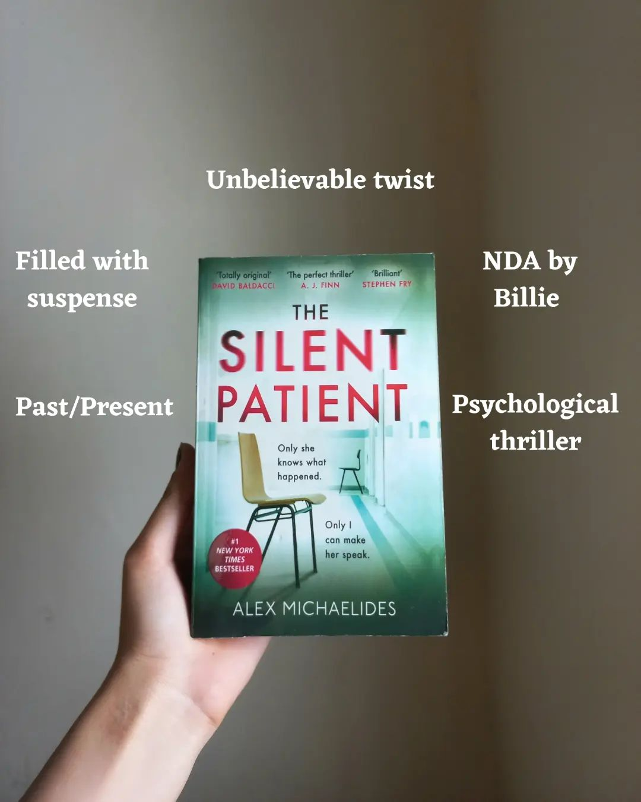

Book Reviews
The Silent Patient
By Jay Asher
Rating: 3.5/5⭐⭐⭐
“13 Reasons Why” is a spectacular book, filled with mysterious thoughts and depressing
acts, is especially
favored to those who think high school is sweet pan-cake.
Our protagonist Hannah Baker is a 17-year-old girl, famous yet lonely. An outgoing girl
as rumor
states but who knows the reality maybe only the one who finished those tapes. Every
single day Hannah
deals with new shit, new rumors, and new people from far off it may seem normal average
bickering but
what happened when the same shit becomes the reason for her death.
Clay Jensen our male protagonist has a crush on Hannah, 2 weeks after Hannah's demise he
received a box of tapes on his front porch. He seems rather skeptical in the beginning
but as the story took its pace he
started to comprehend Hannah's pain, her everyday suffering.
The story deals with real mental health issues, bullying, and eve-teasing. It’s a
serious read for those who
have patience as a story can be a little dim and slow-paced. What Hannah suffers I
presume we all suffered
that somewhere in our high school, either in the form of bullying or gaslighting and
sabotage.
PS:- haven't watched drama yetü•¥

The Silent Patient
By Alex Michaelids
Rating: 5/5⭐⭐⭐⭐⭐
The book is the very definition of a page-turning, jaw-dropping, and mind-boggling
trope.
This book is horrendous both for my heart and brain. first time reading such a thriller
and psychological mind-blowing book. I discovered this genre excites me and I find it
more relatable wherein silent patient just evokes my hunger for psychological tropes
more.
Alicia shoots her beloved husband in the face five times, then never speaks another
word. Theo a psychotherapist who got incaptivative with Alicia's story walks in search
of truth. Though this story is a little slow-paced, I got frustrated a few times; seeing
Alicia's behavior or on-repeat theo pasts or bickering between theo and Kathy, these few
things make the story a little too slow-paced but apparently these pieces contain story
so, it's worth time and patience. The Alcestis story is what I love personally. No
matter how good your prediction capabilities are, you just cannot predict what happens
at the end.
Right from the beginning, the story kept me on the edge arousing my inner detective
throughout the plot. The story is complex with multiple layered covered with a labyrinth
of characters it surely will make you feel an utter sense of goosebumps. I would highly
recommend it to everyone interested in a murder mystery with a twist of psychological
drama.

Reminders of Him
By Collen Hoover
Rating: 5/5⭐⭐⭐⭐⭐
I learned about this book from my younger brother and am forever grateful to him. Glad I
purchased and honestly it was worth reading.
Finally done with one more coho book and can't express the floods of emotions this book
gave. A heart-wrenching, tragic, sorrowful, and full of guilt. This book is up to hype
expectations and let me tell you if you are onto eyes-watering, steamy and emotional
reads then this book is perfect for you.
What will you do when circumstances made you lose your daughter adding salt to the
wounds you proved guilty for something you never wanted to do in the first or last
place?
This story catches with how Kenna's life turned upside down in a flick of a minute and
how she struggles to make a fruitful life for herself. On the other hand of the
spectrum, we have our male Protagonist who is the best so far.
Her daughter Diem is such a sweet tooth & choco pie. Love her shenanigans and the quote
'they say boredom is a sign of intelligence ' perfectly suits her and no doubt her
character is wholesome.
I personally love Kenna more than a ledger.
Apparently, I can't relate to her pain not in my million years also but the way she
deals with her problems prove she's not just garbage but a bar of gold in the tons of
garbage. Moreover, i cried throughout the whole book because her lines are so beautiful
and well-written but empty and lonely simultaneously.
Finally, I fell in love with pointing before reading I never knew pointing can be sexy
but hell it is. My favorite quote is 'you make people feel important and appreciated'
highly recommend you fellas, to give it a go and I'm damn sure you'll hook to Collen
Hoover
Ugly Love
By Collen Hoover
Rating: 4/5⭐⭐⭐⭐
Read this book 2 months ago and was probably the first coho book I read and reading
bestsellers after such a long period was fun. nonetheless, it was good and for me, it's
okay. Victory part- read this book in a day only! Hahaha!
Though this book generates countless emotions but simultaneously done some serious
damage to my definition of self-respect. Overall it's a go-to read book, you'll hook up
till the end and at some point, you want to give up but have patience and wait till dawn
you never know what's wrapped in the upcoming episode.
Tate Collins can't imagine in her wildest dream that she is going to meet Archer miles.
A hot brother friend whom she never met and fell in love with was never in her plan.
What happens when hope gets shattered, love gets broken and life gets meaningless?
Filled with steamy, hot, romance, one-sided love and Humour, sex, heartbreak, loss,
death, and loneliness. It a pretty perfect for those who are into brother friend's
books. If you all want to activate your Testosterone which automatically going to
release a ton of adrenaline then go ahead.
Tate Collins is one heck of a girl nevertheless admire her courage to follow her heart.
On the other end of the spectrum, our male Protagonist is a typical (cliche) Wattpad boy
and this story itself is a typical Wattpad story. At some point i want to knock some
sense out of both but absolutely love their chemistry.
PS: even if I want to I can't hate this book. It not only made me a bookworm but also
evoke my thoughts into writing. Can't get enough and am forever grateful for my throat
infection
Your Dreams are Mine Now
By Ravinder Singh
Rating: 3/5⭐⭐⭐
God✨ I read this book 1month ago and absolutely love the social issue this book
delivers, the writing is so understandable and simple, for me it's mediocre but with
lots of informative messages.
The epitome of simple and subtle yet
impactful with a lot of social messages.
An unembellished tale of 2 lovers hoping
to find light in their respective life. A
prototypical Indian romance with eye-opening theme and crystal teenage
romance. the message of this tale
portrait is demanding and highly needed.
'Your dreams are now' explores the love story between Rupali and Arjun. The 2
flowers
from 2different places, with different ideas, with different goals, and nothing in
common falls in love with one another and shows how innocent and pure but
challenging
can be.
Ravinder Singh has done a real job, a round of applause for himü§ç
The Love Hypothesis
By Ali Hazelwood
Rating: 2/5⭐⭐
The perfect story about she fell first, and he fell harder. stoled this book from my
bestie's mini library and she
is not aware of this fact hence, I deeply express my apology and hope you are not
down.
The infamous TikTok sensation book is proved to be “not so sensation” in real life.
I was so excited to read this book, already made so many non-existent scenarios
nevertheless it's your next not so hyped up book.
The story circles between olive a 3rd year Ph.D. scholar and dr.Adam Carlson a young
brilliant
professor. Olive who doesn't believe in the word love or relationship got to know
that her best friend ann
silently has a crush on her ex, apparently ann is not ready to confess her feelings
for him. She prefers
friendship over the relationship. Momentarily, to make ann believe she moved on
olive kissed the first
person who comes in the corridor which turned out to be his professor Carlson.
This will not be my favorite book but can be one of the good books I read so far.
Few things I quite nor like, it's slow-paced, the character development is slow,
neither a science nerd nor a stem
enthusiastic so, my knowledge is low in this area. The scientific thing makes this
book less interesting for
me overall it's an average go-to book, one can predict the ending and plot by
halfway only